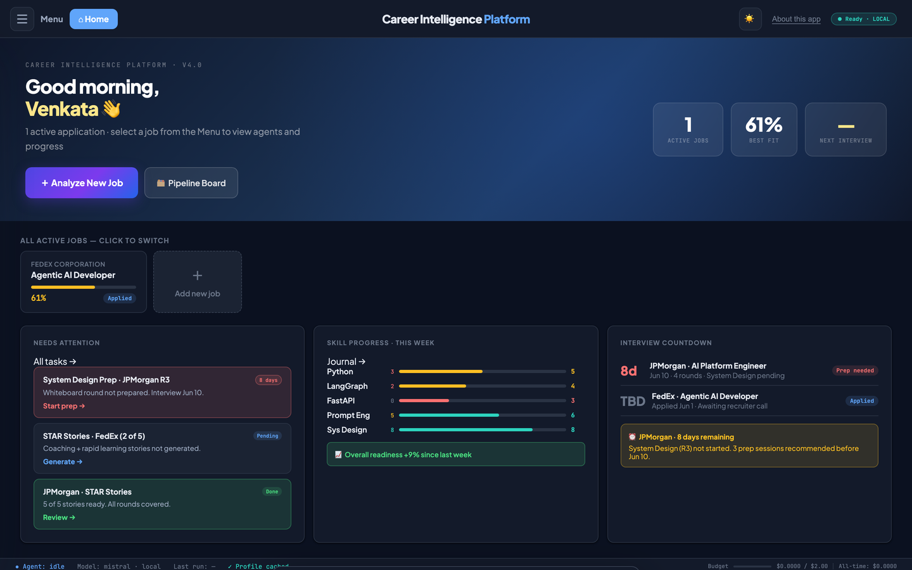
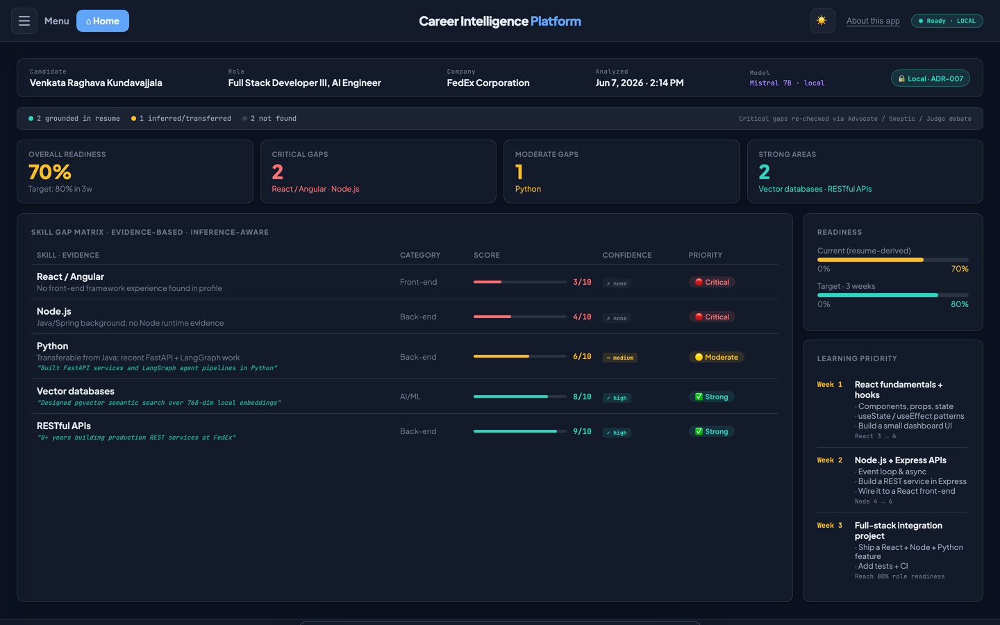
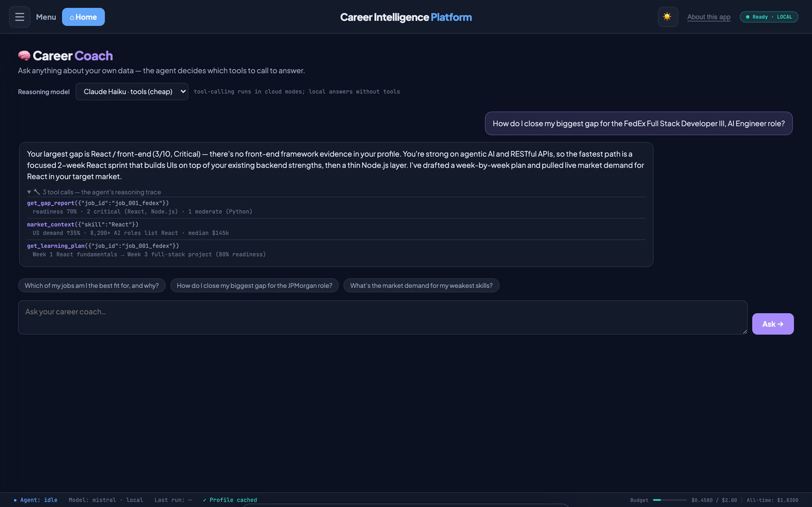
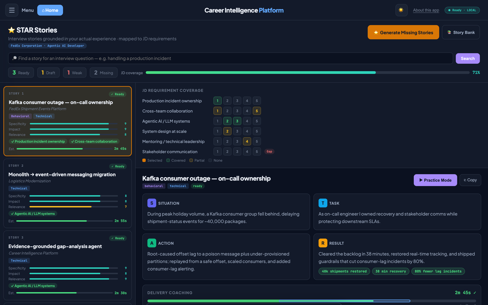
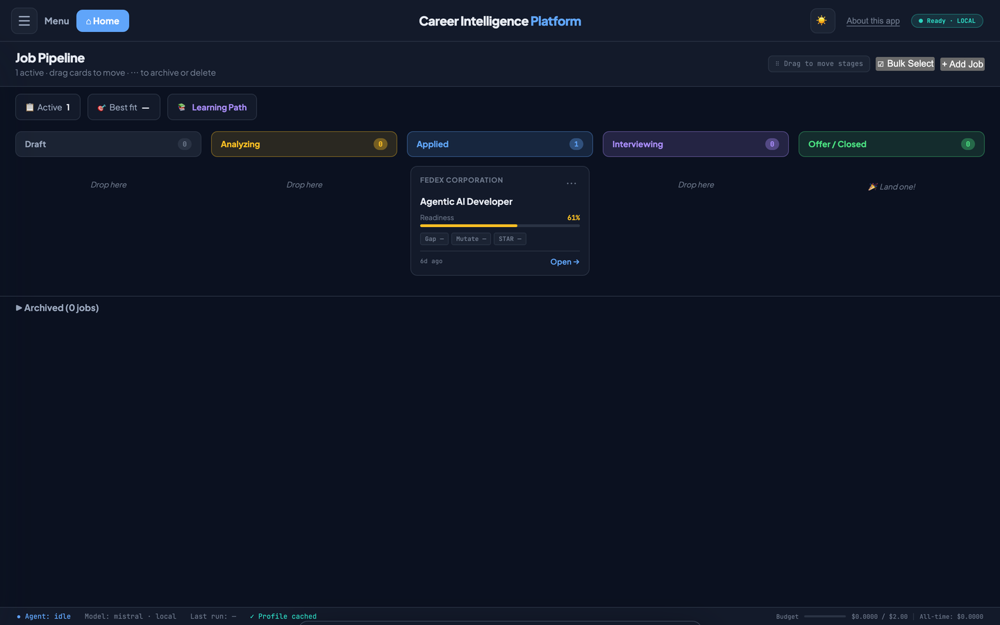
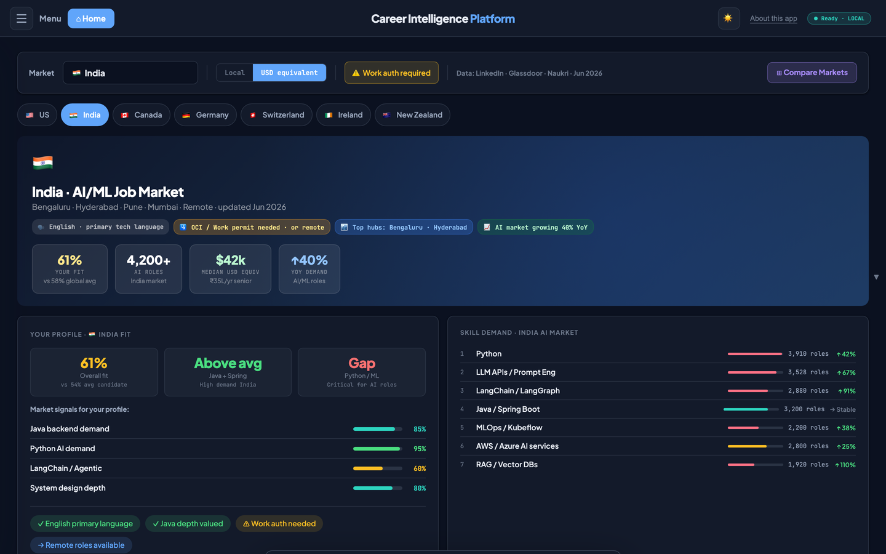
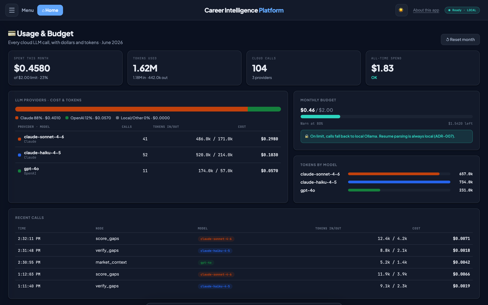

A local-first, multi-agent LLM platform that scores your resume against a job with evidence-backed gap analysis, then helps you close the gaps. Built the way I build backend systems, not the way demos are built.
Mapped against: Full Stack Developer III · AI Engineer — FedEx, Plano TX
Python 3.14FastAPILangGraphOllamaClaudeOpenAIPostgreSQL · pgvectorVanilla JSGitHub Actions CI
A local-first, multi-agent platform that turns a resume and a job description into an evidence-backed readiness assessment, then guides the work to close the gaps. The emphasis is production discipline around the model: every output is schema-validated and treated as untrusted, private data never leaves the device, spend is capped per request with automatic fallback, a human stays in the scoring loop, and agent autonomy is reserved for genuinely open-ended work.
Layered AI architecture · strict one-way dependencies
Frontend
vanilla JS
→
API
FastAPI
→
Services
orchestration
→
Agents · Repositories
LangGraph + LLM router · pgvector
→
Domain
models
The AI lives in a dedicated Agents tier — LangGraph pipelines plus a sensitivity-aware LLM router — sitting alongside the data layer. Everything around it is conventional clean architecture: each layer depends only inward, with no cycles, so the model stays a swappable component rather than the application.
🔒 Local model (Ollama)
Resume parsing and anything with personal data. Enforced at the call site, never leaves the machine.
☁ Cloud models (Claude / OpenAI)
De-identified reasoning only. Per-request tier selection, hard budget cap, automatic local fallback.
🧑 Human-in-the-loop
Your self-assessment recalibrates the AI's skill scores, and any score can be overridden by hand — the human stays in the decision loop.
Screens · simulated
localhost:8000 · Home

Good morning, Raghava 👋
2 active applications · FedEx interview in 8 days
2Active jobs
70%Best fit
8dNext interview
FedEx
Full Stack Developer III, AI Engineer
70%Interviewing
Capital One
Full Stack Engineer, AI
64%Applied
Skill progress · this week
React2 → 3
Python5 → 6
Agentic AI7 → 8
01
Home dashboard
A command center for the whole search: active applications, readiness, the next interview, and weekly skill momentum, with system-aware dark mode.
Engineering: vanilla ES-module frontend, no build step; theme persists with no flash of light mode on load.
localhost:8000 · Gap Analysis

Skill Gap Report
FedEx · Full Stack Developer III, AI Engineer
70% READY
React / Angular · Front-end3/10Critical
Node.js · Back-end4/10Critical
Python · Back-end6/10Moderate
Vector databases · AI8/10Strong
RESTful APIs · Back-end9/10Strong
Verified · Advocate / Skeptic / Judge debate
React / Angular confirmed Critical after 2 rounds · consensus 3/10 · "no front-end framework evidence found in profile"
02
Evidence-based gap analysis
Scores your resume against a job description skill by skill. Every score must cite evidence from your real history. No evidence, no claim.
Engineering: a LangGraph pipeline with Pydantic-validated output; an Advocate / Skeptic / Judge debate re-checks critical gaps, and the model itself decides how many rounds to run.
localhost:8000 · Career Coach

🧠 Career Coach
Claude Haiku · tools
How do I close my biggest gap for the FedEx Full Stack Developer III, AI Engineer role?
Your largest gap is React / front-end (3/10, Critical). You're strong on agentic AI and RESTful APIs, so here's a focused 2-week React + human-in-the-loop UI plan that builds on your backend strengths…
🔧 3 tool calls
get_gap_report(job_id: fedex-fs-ai)
market_context(skill: React)
get_learning_plan(job_id: fedex-fs-ai)
03
Career Coach — a real agent
Ask anything about your own data. The agent decides which tools to call (your gap reports, live market data, your STAR stories) and stops when it can answer. The tool-call trace is shown so you can see it reason.
Engineering: a ReAct agent over a real tool belt. Genuine autonomy is reserved for this open-ended surface, while the analysis pipeline stays deterministic on purpose.
localhost:8000 · STAR Stories

Search
Best matches · pgvector cosine similarity
Kafka outage · on-call ownership91%
Led recovery of a Kafka consumer outage affecting 40k shipments; root-caused offset lag…
Payment retry storm78%
04
Semantic STAR search
Type an interview question and instantly surface your best-matching STAR stories by meaning, not keywords.
Engineering: pgvector cosine similarity over 768-dim embeddings generated locally (Ollama nomic-embed-text). Embeddings never leave the machine.
localhost:8000 · Pipeline

Job Pipeline
+ Add Job
Draft 1
USAA · AI App Eng
Analyzing 1
Capital One · FS AI
Applied 1
Verizon · Agentic AI
Interview 1
FedEx · FS Dev III AI
Offer 0
Drag cards to move stages · bulk select to archive or delete
05
Application pipeline
Track every application across stages from draft to offer, with drag-to-move and bulk actions.
Engineering: crash-safe persistence — every write is temp file, fsync, atomic rename, so a power cut never corrupts your data.
localhost:8000 · Market Intel

🇺🇸 US🤠 Texas🏠 Remote
70%Your fit
8,200+AI roles
$145kMedian USD
Skill demand · US AI market
React / Front-end↑ 35%
Python↑ 45%
Agentic AI tools↑ 88%
RESTful APIsStable
06
Market intelligence
Compare AI/ML hiring across seven regions: demand, salary, and how your profile fits each market.
Engineering: a tool the scoring agent can call at runtime for live salary and demand, with a static baseline as fallback. Only skill names are queried, never personal data.
localhost:8000 · Usage & Budget

💳 Usage & Budget
June 2026
$0.47of $2.00 cap
1.62Mtokens
137API calls
Cost by provider
Claude Sonnet 441 calls$0.298
Claude Haiku 4.552 calls$0.103
GPT-4o11 calls$0.057
Ollama · local63 calls$0.00
Daily spend · last 14 days
07
Usage & budget
Every LLM and external API call, in dollars and tokens, broken down per provider, under a hard monthly cap.
Engineering: spend is checked before each paid call; on the cap, calls fall back to the free local model instead of failing. Real cost runs about $0 to $1 per month.